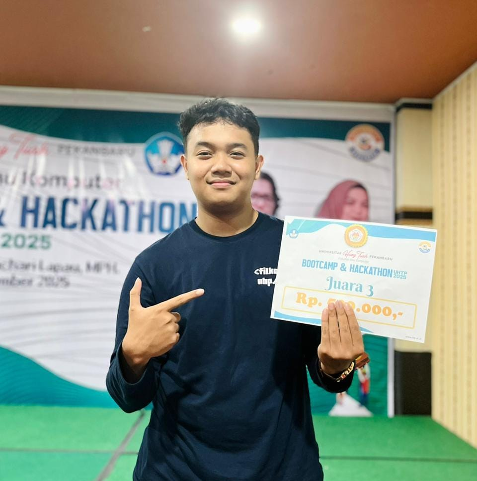
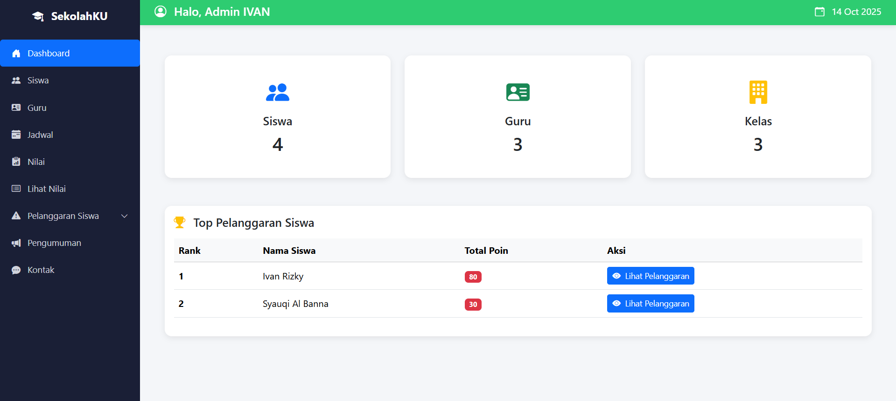
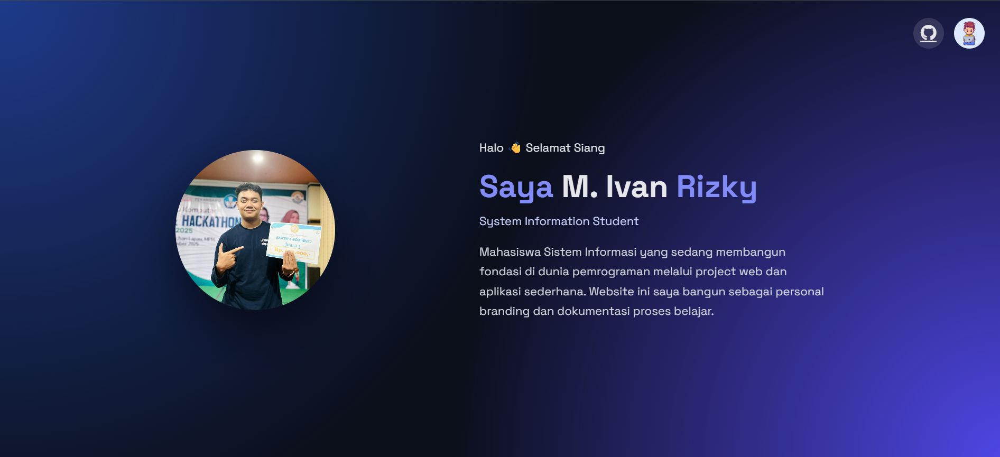

System Information Student
Mahasiswa Sistem Informasi yang sedang membangun fondasi di dunia pemrograman melalui project web dan aplikasi sederhana. Website ini saya bangun sebagai personal branding dan dokumentasi proses belajar.
Saya tertarik mempelajari bagaimana sebuah sistem dan aplikasi bekerja secara menyeluruh, mulai dari logika hingga implementasi kode.
Saya sekarang sedang menempuh pendidikan di Universitas Hang Tuah Pekanbaru. Fokus pada pengembangan sistem, aplikasi berbasis web, dan project mandiri. Dan saya juga tertarik untuk mempelajari berbagai bahasa pemrograman untuk memperluas kemampuan saya.

Aplikasi web yang saya kembangkan untuk membangun sistem pengelolaan data akademik sekolah secara terstruktur, modern, dan mudah digunakan. Project ini menjadi media saya dalam menerapkan logika backend, pengolahan data, dan desain antarmuka web.

Website portfolio pribadi yang saya bangun sebagai representasi diri, proses belajar, dan ketertarikan saya di dunia pengembangan web. Project ini menjadi ruang eksplorasi desain, interaksi, dan pengembangan skill frontend.